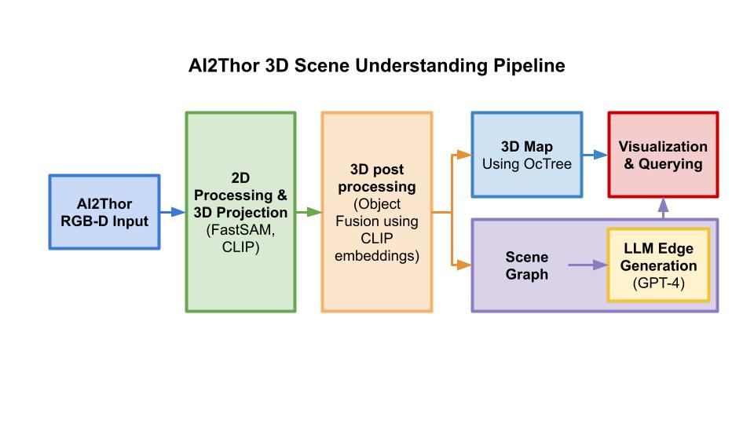

Computer Vision — ESE 5460, University of Pennsylvania
3D Scene Understanding with Concept Graphs
Python
FastSAM
CLIP
OctoMap
Scene Graphs
GPT-4
AI2-Thor
3D Mapping
Open Vocabulary
Most robot perception systems either produce flat 2D segmentation masks or rigid 3D maps with
fixed object vocabularies. This project builds a complete pipeline that goes further: an agent
navigates a photorealistic indoor environment, constructs a dense 3D volumetric map, and
organises every detected object into a queryable scene graph
— all without any fixed class list.
The system runs end-to-end inside the AI2-Thor simulator,
collecting RGB-D observations from a set of sampled viewpoints:
- Segmentation — FastSAM runs on each RGB frame to produce instance masks. Unlike class-driven detectors, FastSAM segments anything, giving the pipeline open-vocabulary coverage of every object in the scene.
- Embedding & classification — Each masked region is passed through a CLIP image encoder. The resulting embedding is matched against a user-supplied class list (with a minimum confidence threshold) so objects get soft, overrideable labels rather than hard predictions.
- 3D backprojection — Using the depth channel and the camera's known intrinsics and pose, every segmented pixel is lifted into world-frame 3D, producing per-detection point clouds.
- Multi-view fusion — An
ObjectFuser associates detections across viewpoints by centroid distance, CLIP similarity, and 3D bounding-box IoU. Duplicate tracks are merged; short-lived noise tracks are pruned.
- OctoMap — Surviving tracks are inserted into a 3D octree, giving a compact, voxelised representation of the scene geometry with per-object colouring.
- LLM scene graph — GPT-4 is prompted with each object's label and centroid and asked to infer spatial and semantic relationships (e.g. "lamp is on table", "chair is next to desk"). These edges are added to a graph structure that supports interactive sub-graph queries ("where are the chairs?").
The result is a persistent, queryable 3D world model — an agent can ask natural-language
questions about the scene and get back a sub-graph highlighting the relevant objects and their
spatial context.

System architecture — segmentation, embedding, 3D fusion, and scene graph generation
.jpg)
Detected objects, 3D centroids, and GPT-4 generated scene graph on an AI2-Thor environment